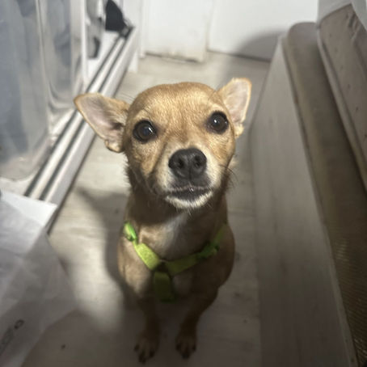
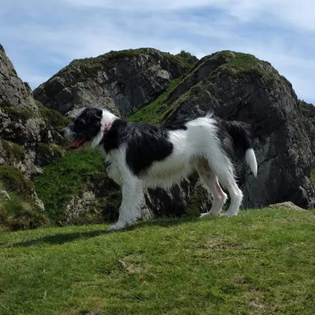
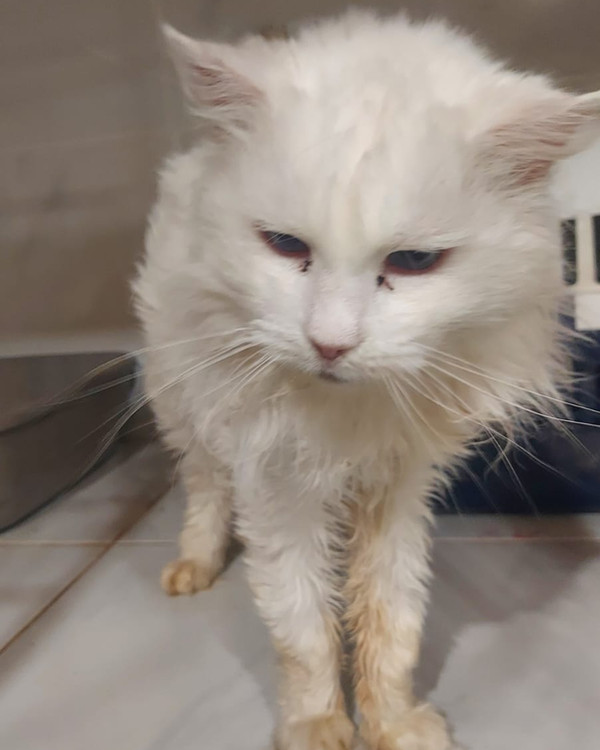
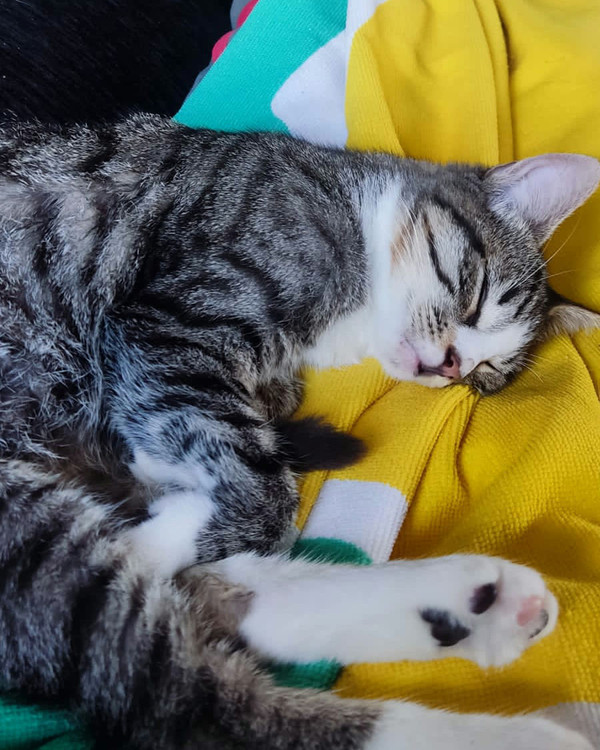
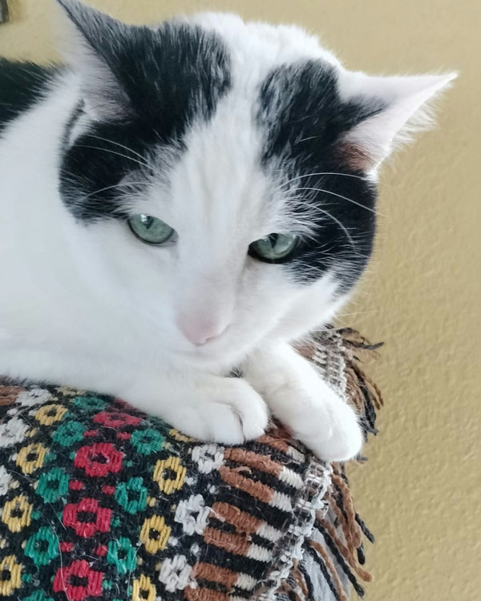
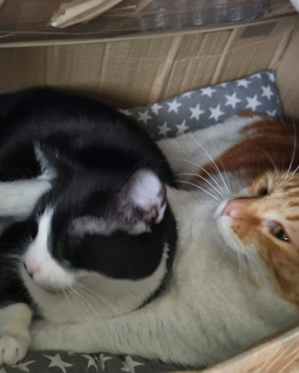
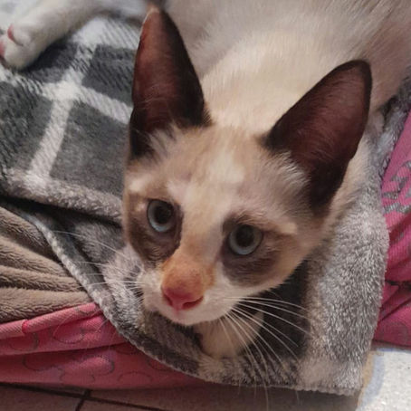
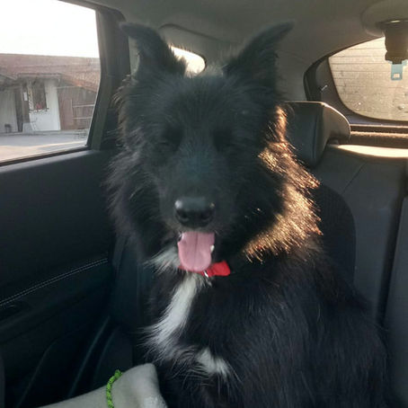

Adoptados
Aquí tenemos los animalitos que hemos ayudado a tener una nueva oportunidad

1 min de lecturaTara
594 0
1 min de lecturaShiva
471 0
1 min de lecturaKala
149 0
1 min de lecturaPitxin
75 0
1 min de lecturaPichurri
42 0
1 min de lecturaLuci y Willie
174 0
1 min de lecturaVilma
192 0
1 min de lectura